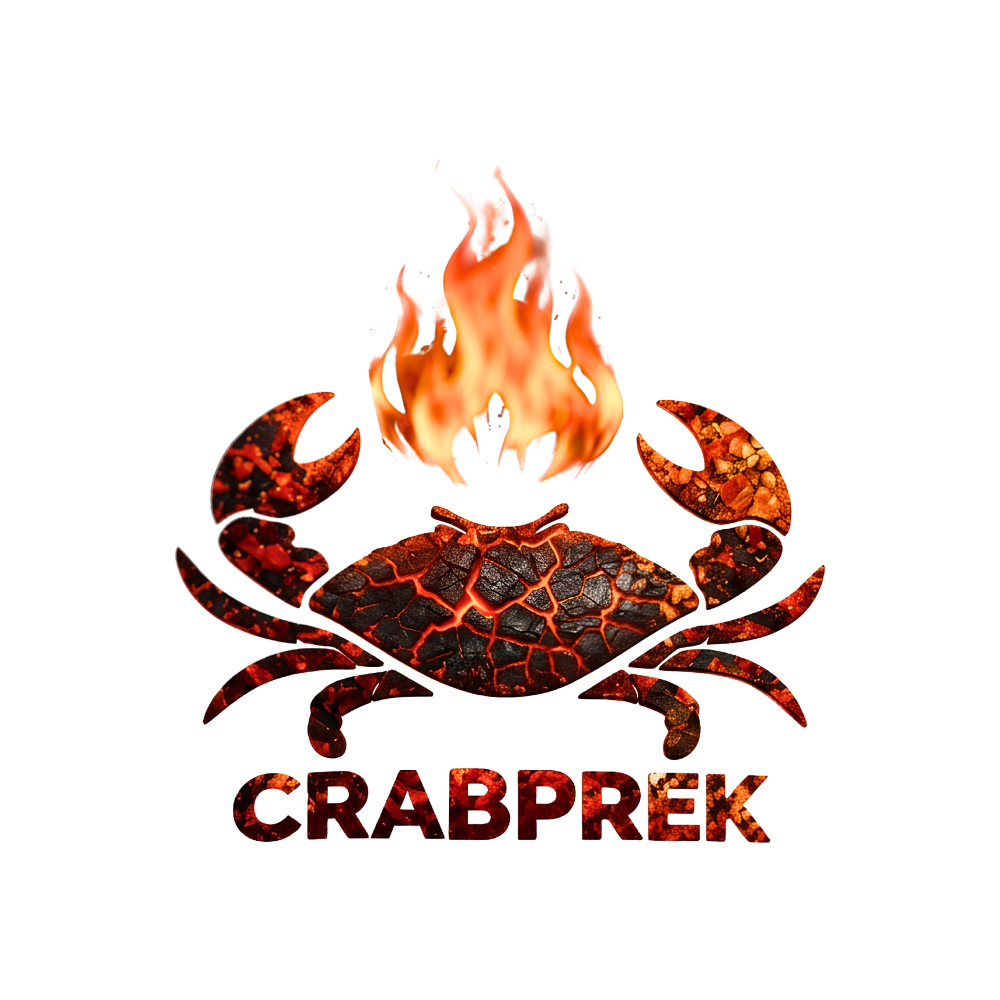

"Sensasi Seafood Geprek Pedas, Harga Puas!"
Bosan dengan olahan geprek ayam yang itu-itu saja? Cobain CRABPREK! Kami adalah pelopor hidangan kepiting geprek pertama di Kota Payakumbuh. Nikmati sensasi menyantap baby crab utuh yang digoreng super renyah sehingga bisa dimakan seluruh bagiannya tanpa perlu ribet mengupas cangkang!
Hindari antrean! Pesan online sekarang atau kepoin konten terbaru kami.